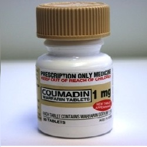

Coumadin (Warfarin)

Warfarinလို႔လူသိမ်ားၿပီး ေသြးက်ဲေဆး၊ေသြးခဲမစုေအာင္ တားဆီးေပးတဲ့ေဆးျဖစ္ပါတယ္။ေသြးခဲေစေသာ protein ထုတ္လုပ္မႉနည္းေအာင္ေလွ်ာ့ေပးၿပီး ခႏၶာကိုယ္ေသြးလည္ပတ္မႉေကာင္းေစပါတယ္။
ေဆးကိုဘယ္ေနရာေတြမွာသံုးလဲ?
- ဦးေႏွာက္၊ႏွလံုး၊အဆုတ္ အစရွိတဲ့ေနရာေတြမွာေသြးခဲျဖစ္ႏႉန္းေလွ်ာ့ခ်ေပးလို႔ ေလျဖတ္ေရာဂါ၊ႏွလံုးေရာဂါျဖစ္ပြားႏႉန္းကိုနည္းေစပါတယ္။ေသြးခဲျဖစ္ေစႏိုင္တဲ့အေၾကာင္းအရာေတြျဖစ္တဲ့-ႏွလံုးခုန္ပံုမွန္မဟုတ္ေသာသူ၊ႏွလံုးအဆို႔ရွင္လဲထားေသာသူ၊ႏွလံုးေရာဂါျဖစ္ဖူးသူ၊ဒူးေခါင္းရိုးခြဲစိတ္အစားထိုးထားေသာသူေတြမွာ အဓိကသံုးပါတယ္။
ေဆးရဲ႕ဆိုးက်ိဳးဘာေတြရွိလဲ?
- ပ်ိဳ႕အန္၊အစားအေသာက္ပ်က္၊ဗိုက္ေအာင့္ဗိုက္နာမ်ားျဖစ္တတ္ပါတယ္။ေသြးက်ဲေစေသာအာနိသင္ရွိလို႔ ခႏၶာကိုယ္မွေသြးထြက္ႏိုင္တဲ့လကၡဏာမ်ား(သူ႔အလိုလိုေသြးေျခဥျခင္း၊ေသြးမတိတ္ျခင္း၊ႏွာေခါင္းေသြးလွ်ံ၊သြားဖံုးေသြးယိုျခင္း၊ဆီးအေရာင္ရင့္ျခင္း၊ဝမ္းမဲမဲသြားျခင္း၊အညိဳေရာင္အန္ျခင္း၊ေခါင္းကိုက္၊ေခါင္းမူးျခင္း)ျဖစ္တတ္ပါတယ္။လကၡဏာဆိုးလွ်င္နီးစပ္ရာေဆးခန္းသြားျပပါ။ေဆးရပ္ၿပီးလွ်င္ေတာင္ ေသြးက်ဲေစေသာအာနိသင္က ေသြးထဲမွာ ၁ပတ္ခန္႔က်န္ေနတတ္ပါတယ္။ေက်ာက္ကပ္၊မ်က္လံုးထိႏိုင္ေပမယ့္ ရွားပါတယ္။
ေဆးေသာက္လွ်င္ဘာေတြသတိထားရမလဲ?
- အျခားေသာက္ေနေသာေဆးမ်ား၊ေရာဂါအခံ၊ေက်ာက္ကပ္ေရာဂါ၊အသည္းေရာဂါ၊ေသြးထြက္တတ္ေသာေရာဂါ၊မၾကာခင္က အႀကီးစားခြဲစိတ္မႉလုပ္ထားတာရွိ/မရွိ ဆရာဝန္ကိုႀကိဳေျပာထားဖို႔လိုပါတယ္။အရက္ေသာက္တတ္ေသာသူမ်ားတြင္ အစာအိမ္ပိုထိႏိုင္ေသာေၾကာင့္ အရက္ေသာက္တာကိုေလွ်ာ့ရပါမယ္။Vit Kပါဝင္မႉမ်ားေသာအစားအစာမ်ား(ပန္းေဂၚဖီ၊ေဂၚဖီစိမ္း၊ေဂၚဖီထုပ္၊ကညႊတ္)ႏွင့္ Vit K ပါဝင္ေသာအားေဆးကိုရုတ္တရက္မ်ားတာ၊နည္းတာေရွာင္ရပါမယ္။။ေသြးက်ဲေစေသာ၊ေသြးတိတ္ရခက္ေသာအာနိသင္ရွိလို႔ ေဆးေသာက္ေနစဥ္ ခႏၶာကိုယ္ထိခိုက္မႉနည္းေအာင္ သတိထားရပါမယ္။ခြဲစိတ္မႉတစ္ခုခုျပဳလုပ္ဖို႔ရွိလွ်င္ ဆရာဝန္၊သြားဆရာဝန္ေတြကို ေသြးက်ဲေဆးေသာက္ေနတာ ႀကိဳေျပာထားဖို႔မေမ့ပါနဲ႔။ကိုယ္ဝန္ေဆာင္မ်ားလည္း warfarin လံုးဝမသုံုးသင့္ပါ။ဆရာဝန္နဲ႔ေသခ်ာတ်ဳင္ပင္ၿပီးေဆးေျပာင္းဖို႔လိုလွ်င္ေျပာင္းရပါလိမ့္မယ္။ႏို႔တိုက္မိခင္မ်ားတြင္ေတာ့ အႏၱရာယ္မရွိပါ။
ေဆးအာနိသင္ဘယ္လိုရွိလဲ?
– အကိုက္အခဲေပ်ာက္ေဆး၊အျခားေသြးက်ဲေဆးမ်ား(aspirin,clopidogrel) မ်ားႏွင့္တြဲသံုးလွ်င္ဆိုးက်ိဳးရွိႏိုင္လို႔ ေဆးပမာဏနည္းေအာင္ေျပာင္းရပါမယ္။တိုင္းရင္းေဆးမ်ားႏွင့္လည္း ေဆးအာနိသင္ အေျပာင္းအလဲရွိႏိုင္ပါတယ္။
ေဆးေသာက္လြန္လွ်င္ဘာေတြျဖစ္မလဲ?
-ခႏၶာကိုယ္ေသြးထြက္လြန္ျခင္း၊ဆီး၊ဝမ္းေသြးပါျခင္း၊ေသြးမတိတ္ျခင္းမ်ားျဖစ္ၿပီးေသြးအားက်ကာ အသက္အႏၱရာယ္ရွိႏိုင္ပါတယ္။
Warfarin ေဆးေသာက္ေနခ်ိန္ အစားအစာကိုမွ်တေအာင္စားဖို႔လိုပါတယ္။ပံုမွန္ေသြးစစ္ၿပီး ေဆးပမာဏထိန္းေပးဖို႔လည္းလိုပါတယ္။လိုအပ္တဲ့ပမာဏအတိုင္းေသာက္လွ်င္ေကာင္းေသာေဆးျဖစ္ေပမယ့္ ေဆးပမာဏမ်ားသြားလွ်င္ေတာ့ဆိုးက်ိဳးမ်ားႏိုင္ပါတယ္။